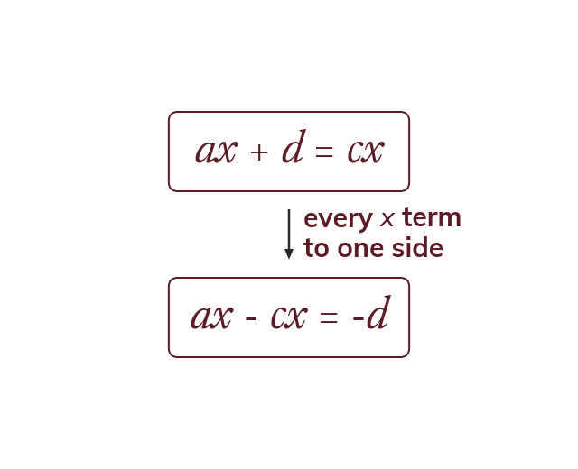

One letter in two places
If the subject appears twice, inverse operations alone cannot isolate it. Collect every subject term on one side first.
Where the subject appears twice, inverse operations alone can never isolate it. Every term containing the subject is collected on one side, and every other term on the other.